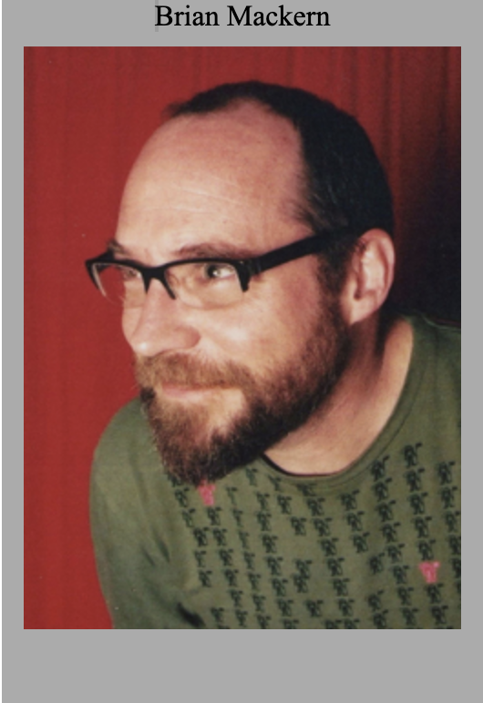

Home
About
Work
Home
About
Work
Brian Mackern born in Mercedes, Uruguay, 5 de diciembre de 1962, es un artista uruguayo que ha desarrollado la mayor parte de su producción artística en el área de la Net.art y Sound art. Brian Mackern is a deisgner and developer who is passionate about creating innovative and engaging digital experience. Desde 1999 realiza trabajos como video-data jockey realizando experimentos musicales con proyecciones, datos y colaborando con artistas sonoros y musicales. A compuesto música para piezas de teatro, video, films y ha diseñado entornos sonoros para performances Es docente en la Escuela de Bellas Artes, de la Universidad de la República.

BMackern también es conocido por su contribución a la preservación del net.art, medio artístico amenazado por la constante renovación o obsolescencia que amparan sus herramientas. Cabe mencionar, entre otros, no-content.net vintage collection en 2003, la Máquina Podrida en 1998 asta 2004 ,la recopilación Netartistas Latinos, y el comisariado para la exposición artef@ctos virtuales en 2008 en el Museo Tamayo. En estos reacondiciona equipos obsoletos y recupera obras net para poder ser experimentados de nuevo.
Uno de los primer premios de Brian Mackern fue premio 50.º Salón Nacional de Artes Visuales Montevideo, Uruguay. Su segundo premio fue 'Best Multimedia Author', XI Canarias Mediafest, Las Palmas de Gran Canaria, España, por su crecion de no.content. Por ultimo Brian puso Apoyo a la Producción artística' MAD03 Madrid, España,(2003).